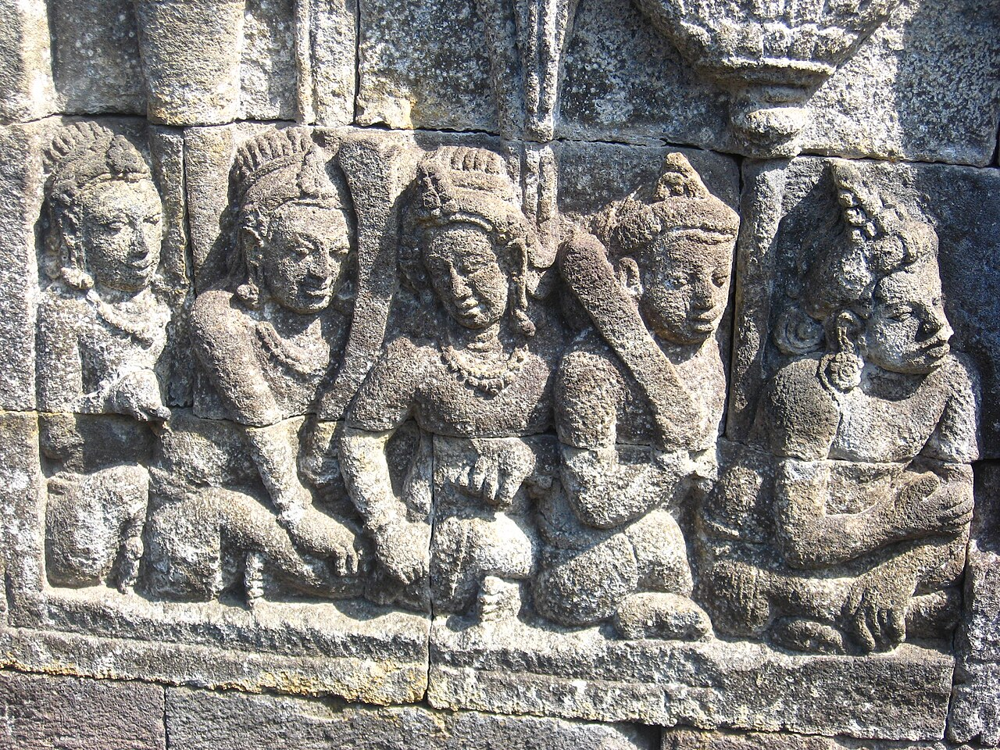
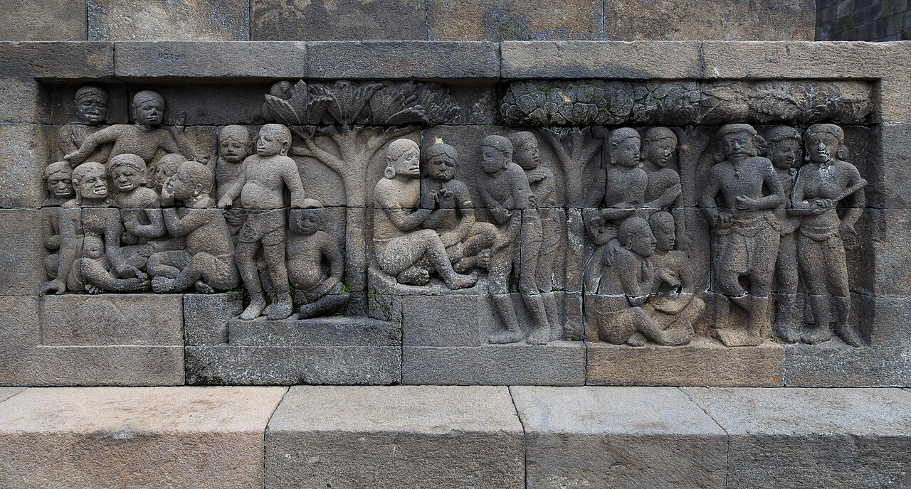

Borobudur is not a monument to rush through on the way to a photograph. The climb carries you past reliefs, ledges, and openings where the surrounding landscape comes back into view.
Read the monument in layers
Built in Central Java in the 9th century, Borobudur is a Buddhist monument arranged in rising terraces. Carved panels line its galleries, while bell-shaped stupas crown the upper levels. The UNESCO World Heritage entry gives a concise overview of its history and design.
Try choosing one stretch of reliefs to look at closely. Figures, gestures, and repeated patterns can make the walls feel less like decoration and more like a story unfolding beside you.

Plan the visit first, then the climb
Use the official Borobudur ticket portal to check current entry options, access conditions, and any requirements for reaching upper levels. Rules and availability can change; confirm them for your date before setting out.
Borobudur is outside Yogyakarta’s city center, so decide how you will reach the site and how much time you want there before choosing transport. Leave room for the entry process, warm weather, and a pause between the carved galleries and the open terraces.
A few small courtesies
Borobudur is a sacred Buddhist site as well as a major heritage destination. Follow the posted route, respect staff instructions and access limits, and keep your voice low around people who are praying or taking a quiet moment.
When the path opens onto the upper terraces, take in the view before reaching for your phone. Then make space for the next visitor to see it too.

Official visitor information
Check the current access route, entry rules, and ticket conditions directly before visiting.
Recommended apps for the best trip
These independent services are not Met partners. Confirm availability, routes, and booking terms with each provider.
Google Maps
Compare routes around Yogyakarta and Magelang, then verify the final transfer.
Gojek
Check ride options in Indonesia where service and pickup are available.
Traveloka
Compare regional transport and stays; use the official portal for Borobudur admission.
Agoda
Compare stays near the temple or in Yogyakarta and check the route before booking.
Met
save your name and the memory in the “Borobudur” Guest Book with a handwritten-style note or photo, and connect with other great travelers along the path.